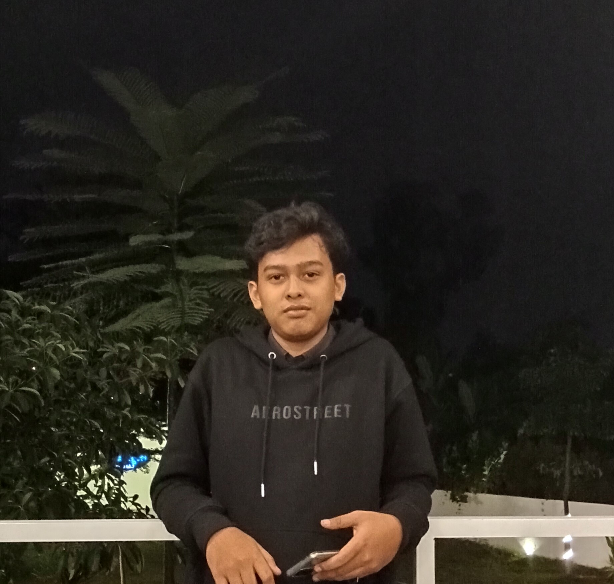

Hello, Nama saya
Sebagai Mahasiswa Unimus yang bersemangat, saya memiliki minat yang kuat dalam membangun antarmuka pengguna yang dinamis dan menarik menggunakan html dan css. Dalam peran saya saat ini sebagai mahasiswa, saya mengkhususkan diri dalam menciptakan desain visual yang menakjubkan yang tidak hanya mudah dilihat, tetapi juga dibangun dengan standar kualitas kode tertinggi. untuk memberikan pengalaman pengguna yang mulus.
